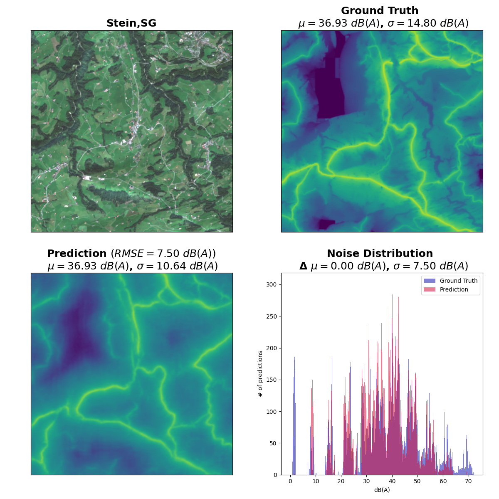

Road traffic noise represents a global health issue. Despite its importance, noise data are unavailable in many regions of the world. Such data are typically inferred through point measurements and complex physical models to simulate the propagation of noise.
Since this process is unfeasible in many areas of the world, we therefore propose to approximate noise data from satellite imagery in an end-to-end Deep Learning approach. We train a U-Net segmentation model to estimate road noise based on freely available Sentinel-2 satellite imagery and existing road traffic noise estimates for Switzerland.
{kind=link}

Our model shows promising results: it is able to achieve an RMSE of 8.8 dB(A) for day-time traffic noise and 7.6 dB(A) for nighttime traffic noise with a spatial resolution of 10 m. In addition to identifying major road networks, our model succeeds to predict the spatial propagation of noise with some limitations. We furthermore find our model to perform better in rural areas than in crowded urban areas, which is a result of the limited spatial resolution of the satellite imagery used. Nevertheless, our results suggest that this approach provides a pathway to estimating road traffic noise for areas for which no such measures are available
This work was the Bachelor thesis project of Leonardo Eicher, who also presented his results at IGARSS 2022 (see below).
Resources
- Eicher, L., Mommert, M., Borth, D., “Traffic Noise Estimation from Satellite Imagery with Deep Learning”, IEEE International Geoscience and Remote Sensing Symposium 2022) (open access), 2022.